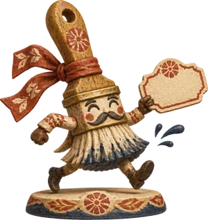
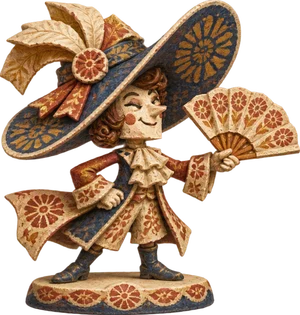

Ярмарка невозможных ремёсел
Карты и фигурки ведущего
Игровой комплект
3 игрока · 4 игрока · 5 игроков · 6 игроков · 7 игроков · 8 игроков
Карта кампании

Поля боя


Герои


Персонажи ведущего


Противники


Ожившая учебная кисть 4Ожившая учебная кисть 2Ожившая учебная кисть 6Ожившая учебная кисть 1Ожившая учебная кисть 5Ожившая учебная кисть 3

Бумажный щёголь 2Бумажный щёголь 3Бумажный щёголь 1Бумажный щёголь 5Бумажный щёголь 6Бумажный щёголь 4 Оживший бумажный завиток 2Оживший бумажный завиток 1Оживший бумажный завиток 4Оживший бумажный завиток 5Оживший бумажный завиток 6Оживший бумажный завиток 3
Оживший бумажный завиток 2Оживший бумажный завиток 1Оживший бумажный завиток 4Оживший бумажный завиток 5Оживший бумажный завиток 6Оживший бумажный завиток 3